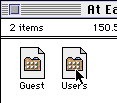

Anyone who uses Macintosh computers in any sort of public lab has undoubtedly run into a protection program called At Ease. Now, I understand the desire for administrators to secure software, but At Ease is a nuisance. It severely limits what you can do with the computer. What's the use of having a powerful computer that is intentionally limited? It's like having a sports car with flat tires; sure, you can drive it, but your not going anywhere in a hurry. But, I digress.
There are ways to...disable At Ease. When the program is first installed, the administrator and /or staff can include a password option to shut down At Ease and let the user access the Finder. It is, in some cases, possible to find out what the password is, however.
The real secret is to use a program that allows one to view the resource fork of files (I'm not here to tell you what a resource fork is. That's for programmers. This is a hackers guide). My personal favorite is ResEdit. Now, you can do some serious damage with ResEdit if you're not careful, but in this case, all you'll be doing is reading files.

Figure 1: The file
you're looking for. |
Now in order to use ResEdit, the computer in question must allow you to open files that are not necessarily within the At Ease folders. This is different on each computer. If you can't do it...you're screwed (Hell Inc. is working on a way around that problem).
The file that you want to open up and examine is simply called "Users." It's buried deeply in the System folder. From the File menu of ResEdit, open the "System Folder", then the "At Ease Items" folder, then the folder "At Ease Users." It's in the "At Ease Users" folder that there should be a file called "Users." (see Figure 1)
|
Open that puppy up and have a look.
You should get a message basically telling you that the file is locked and you can't make changes. That's ok, since all your going to do is read the information anyway.
Once open, an icon with a bunch of 1's and 0's called "User" should be visible. Open that up. Now you should have some choices. There should be a bunch of user names listed. It's up to you to find the one that represents the one with a password. Probably named "Staff" or something like that.
Anyway, when you open that up, and should see a bunch of numbers and digits (Figure 2). In the center column is information is hexidecimal form (again, no explanation). The right column represents the text of what is coded for in the center.About halfway down the center column, at offset (for all you computer geeks) 000022, a series of numbers and letters will appear.
A
B
C
D
E
F
G
H
I
J
K
L
M
N
O
P
Q
R
S
T
U
V
W
X
Y
Z
1
2
3
4
5
6
7
8
9
0 |
Hexidecimal |
F8
FB
FA
FD
FC
FF
FE
F1
F0
F3
F2
F5
F4
F7
F6
E9
E8
EB
EA
ED
EC
EF
EE
E1
E0
E3
A8
AB
AA
AD
AC
AF
AE
A1
A0
A9
|
D8
DB
DA
DD
DC
DF
DE
D1
D0
D3
D2
D5
D4
D7
D6
C9
C8
CB
CA
CD
CC
CF
CE
C1
C0
C3
|
| Table 1:Hexidecimal conversions |
|
| |